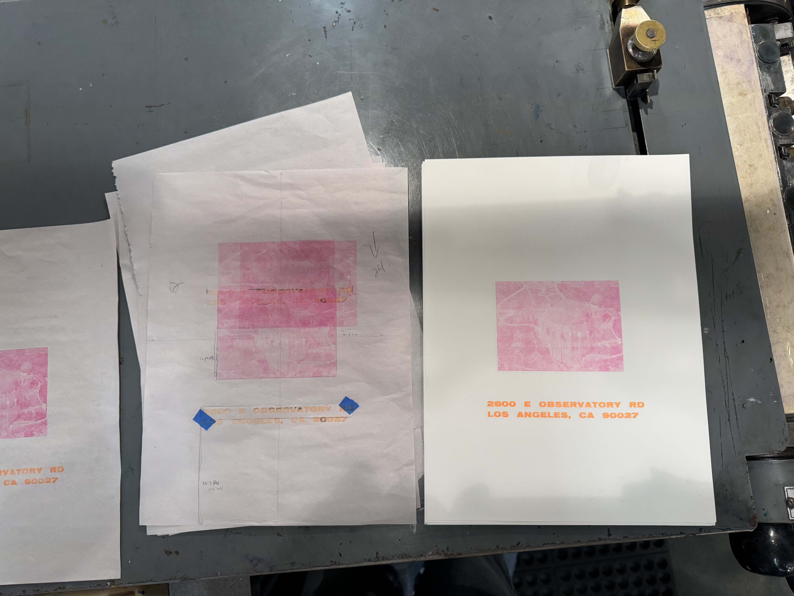

Artwork
Griffith Observatory
Letterpress printing on paper. Add dimensions, edition information, exhibition context, or a short reflection here.

Detail or documentation image
Artwork
Letterpress printing on paper. Add dimensions, edition information, exhibition context, or a short reflection here.
